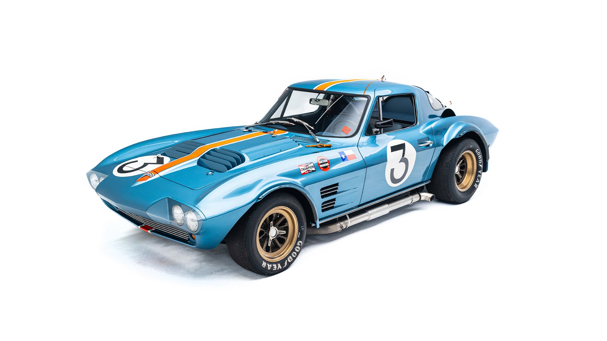

Vehicles
About Us
Contact Us
Available Vehicles

1963 Chevrolet Corvette Grand Sport #004
Learn More
1986 Audi Sport Quattro Replica “Turbo Monster”
Learn More
2001 Honda S2000 (2 Fast 2 Furious)
Learn More
1981 DeLorean DMC-12 “Time Machine”
Learn More
1965 Chevrolet Impala “Sunset 65”
Learn More
2022 Bugatti Chiron Pur Sport
Learn More